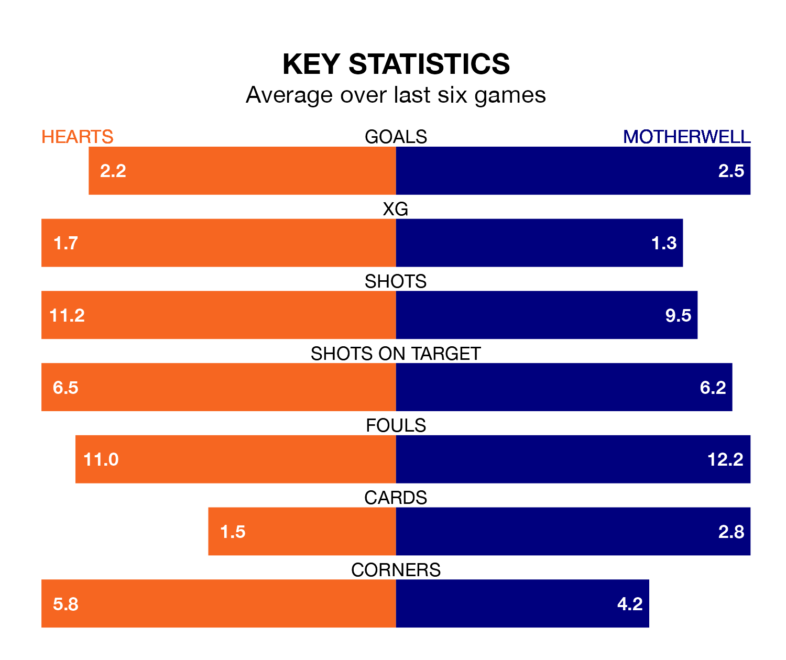

Saturday's match between Hearts and Motherwell promises to be one for the neutrals, as two of the Premiership's most free-scoring sides go head-to-head.
Ahead of the game at Tynecastle Park, Hearts and Motherwell sit joint-fourth and third in the goal-scoring charts, with 33 and 35 goals respectively.
Striker Lawrence Shankland leads the way for the home side, having bagged 17 goals in their 25 games to date.
And Thelonius Bair has been the main man in the opponents' penalty box for Motherwell, with 10 goals.
With Zander Clark between the sticks, Hearts can rely on one of the league's safest pair of hands. He has kept 12 clean sheets in his 25 appearances this season, and only one other 'keeper – Rangers's Jack Butland – has been able to prevent the opposition scoring on more occasions in the Premiership.
In Motherwell's net, Liam Kelly has three clean sheets in 25 games. He has conceded a goal every 63 minutes, 90% more often than the 118 minutes between goals for Clark.
The hosts are in fantastic form in the Premiership, with five wins and a draw from their last six games.
With two wins and four draws over that period, the away team's form is much worse – they have taken 10 points from 18, compared to Hearts's 16.
In the last 10 years, Hearts and Motherwell have played each other on 28 occasions. Hearts won 15 of them, Motherwell 10, and they drew three times.
On average, Hearts scored 1.7 goals and Motherwell 1.1 in those matches.
Their last meeting was on November 11, when Hearts won 2-1 away.
Hearts are third in the table after 25 games, of which they have won 15 and drawn three, earning 48 points.
Motherwell are four places behind the home side in seventh, with five wins and 11 draws putting them on 26 points.
Hearts's last match was on February 7, a 1-0 win against St. Johnstone, with Shankland getting the goal for Hearts.
Motherwell drew 3-3 with Aberdeen last time out, on Wednesday, with Bair (two) and Adam Devine on the scoresheet.
Updated: 12:06 (UTC), 15/02/24